文字
背景
行間

_
 ブリティッシュヒルズ宿泊研修
ブリティッシュヒルズ宿泊研修
9月29日（金）から10月1日（日）まで、45人の1年生が参加し、ブリティッシュヒルズ国内英語宿泊研修が行われました。朝には霧が立ち込め、まるで中世のイギリスにいるかのような雰囲気の中で英語研修が行われました。英語でのチェックインから始まり、Survival Englishなどのウォームアップアクティビティ、論理的思考に基づく問題解決法を学ぶRAVENメソッド、新商品の開発とプレゼンテーションを行うLion's Den、そしてイギリスのゲームやスポーツ体験などに取り組みました。
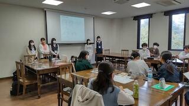 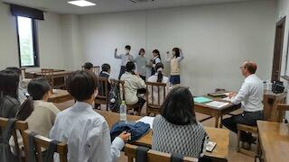 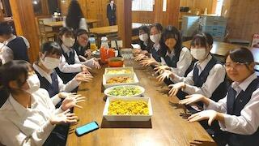
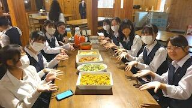

 高校理数科進学フェア～理数科で学ぼう！～
高校理数科進学フェア～理数科で学ぼう！～
令和５年８月２６日（土）に「千葉県教育委員会 学校提案型魅力発信事業」として、「高校理数科進学フェア～理数科で学ぼう！～」を、千葉工業大学を会場に実施しました。
当日は、多くの来場者が、各校の理数科の特長や学習内容について質問したり、実験ブースで科学実験や観察等をしたりして、大変盛況でした。各校からは実験ブースの運営や、課題研究のポスター発表を担当する生徒が参加してくれました。
これからの社会で求められる理数系人材の育成に理数科は頑張っていきます。多くの中学生が、理数科の特色を理解し、入学を希望してくれることを期待しています。
【参加校】県立船橋高校、県立柏高校、佐倉高校、佐原高校、匝瑳高校、成東高校、長生高校、木更津高校、市立千葉高校、市立銚子高校
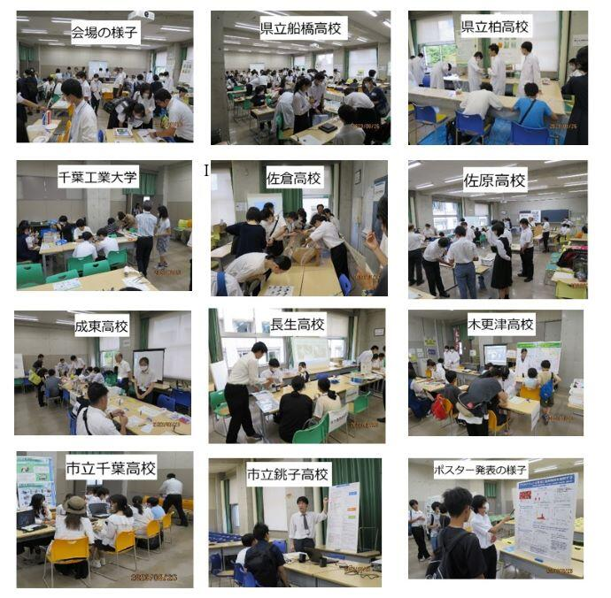
 Global Studies Program 8/21〜8/24
Global Studies Program 8/21〜8/24
 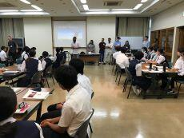 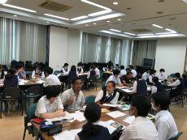
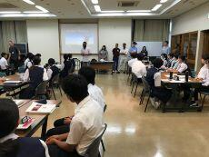 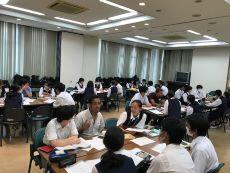
 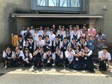
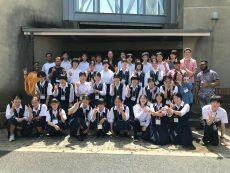
 鍋山祭開催
鍋山祭開催
本年度は換気や消毒等の感染対策に留意し、保護者（１名）の方の入場制限を設けた上で、校内発表・保護者公開を行うこととなりました。
生徒たちは長期間懸命に準備に取り組んでおり、当日は各クラス凝った装飾が施されていました。また、心から文化祭を楽しむ生徒の様子が印象的でした。
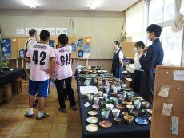 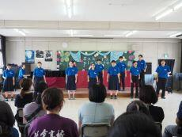

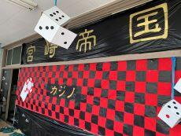
 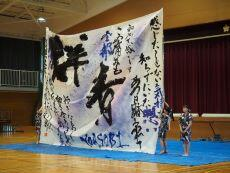
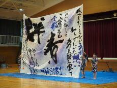  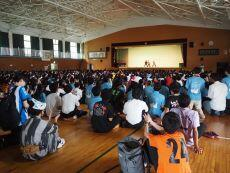
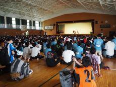
 ツェツィリアン・ギムナジウムの先生方来校
ツェツィリアン・ギムナジウムの先生方来校


2023年6月23日（金）台湾師範大学生訪問
千葉大学を訪問中の台湾師範大学の先生１名、学生８名が千葉大学教育学部のホーン先生と共に来校され、英語の授業(3A,1G）や家庭科の選択授業での調理実習や体育など様々な授業の様子を参観しました。英語の授業ではグループ活動に参加し、生徒の質問に答えて授業で扱っている話題に関しての台湾での現状を紹介してくださるなどし、楽しい交流のひと時を過ごしました。
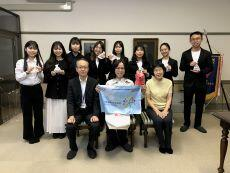

 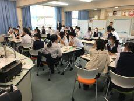
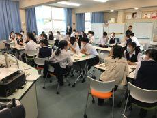
 地域とつながる探究学習
地域とつながる探究学習
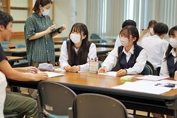
 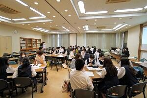
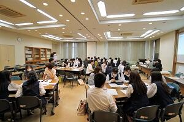
 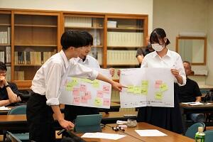
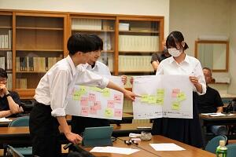
令和５年度体育祭
次回は、１０月の球技大会です。更なる活躍を期待します。
 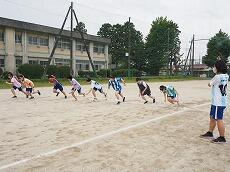
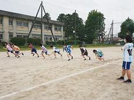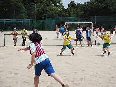


 ダンス同好会 ３年生引退公演
ダンス同好会 ３年生引退公演
4月27・28日の二日間、お昼休みに体育館にて３年生引退公演を行いました。
３年生にとっては今回の公演がラストステージとなりましたが、盛況の中無事に公演を終えることができました。
いつも応援・サポートをしてくださる皆様、来場してくださった生徒・先生方、本当にありがとうございました。


伝える探究文化（探究ガイダンス）
佐倉高校は全生徒が３年間課題研究に取り組みます。今年度の活動もすでにスタートしています。今回は４月２５日（火）に実施された「伝える探究文化」の様子を紹介します。新入生に本校の探究学習をイメージしてもらうため３年生の優れた発表をリアルで体験するイベントです。この日の発表テーマは以下の４つです。
「みんな違って、みんないい」（日本語）
「No Music, No Life〜学校生活と音楽♪〜」（日本語）
「Peace Education」（英語）
「Wifi for Children’s Hospital」（英語）
本校の財産は探究経験値の蓄積です。生徒にとって課題研究を行うことは当たり前の文化になっています。教員側も探究サイクルを回す経験に富んでいます。探究文化が順調に継承されています。
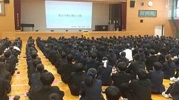
 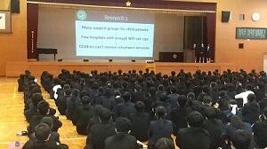
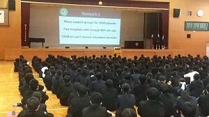
対面式
対面式の開催は３年ぶりとなり、１年生はもちろん、２・３年生も初めての行事でしたが、生徒会役員の皆さんの進行により、無事に顔合わせを行うことができました。
生徒会会長から新入生に暖かな歓迎の言葉が送られ、新入生代表からもこれからの学校生活を頑張りたいという誓いの言葉が伝えられました。
 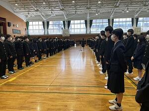
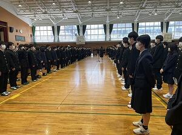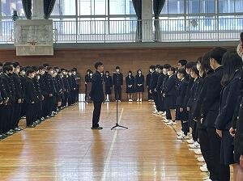

令校5年 入学式・校章贈呈式
その後の校章贈呈式では、佐倉高校同窓会である鹿山会の会長より、校章の贈呈があり挨拶もいただきました。
音楽部の校歌披露や吹奏楽部の入退場曲演奏、写真部の撮影など、在校生の協力もあり素晴らしい式となりました。
新入生の皆さんも、初めは緊張していましたが、式後のホームルームでは笑顔あふれる教室風景が見られました。
来週から新しい環境での生活が始まります。佐倉高校の校訓である「質実剛健、積極進取、独立自尊」を忘れずに日々の活動に取り組んでもらえればと思います。
 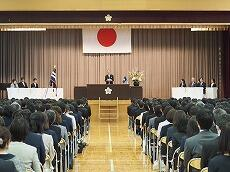
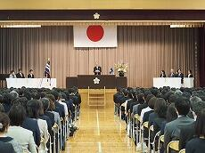 


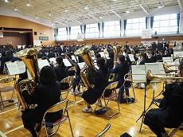
 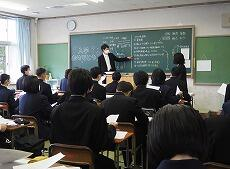
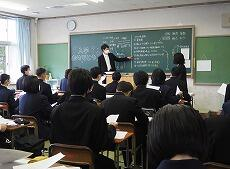
 佐倉アクティブ「データサイエンス講座」
佐倉アクティブ「データサイエンス講座」
NPO法人企業教育研究会の運営で開講されました。
どの層向けにどのような施策を用意すべきなのかを話し合いました。


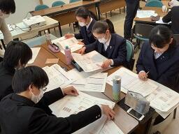

SAKURA Art&Learning 3days
佐倉市の「夢咲くら館」のオープニング企画として佐倉高校の「SAKURA Art&Learning 3days」を開催しました。
「夢咲くら館」とは、この3月に佐倉市で新しくオープンした図書館やカフェなどの複合施設のことです。
3月24日(金)から26日(日)にかけて3日間の企画で、
でした。
また、課題研究発表ポスター展示では、佐原高校・成東高校・市立銚子高校も参加しました。
このようなコラボ＋4校合同の開催は初めての試みでしたが、
どの団体も数ヶ月準備を重ね、充実した3日間となりました。
悪天候の中での開催となりましたが、ご来場いただいたみなさま、ありがとうございました。


 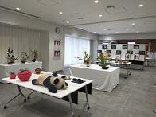
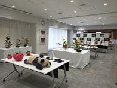


 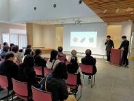
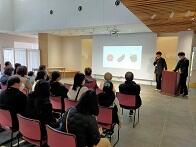 
この企画のポスターは以下のリンクからご覧ください。
SAKUR Art & Learning 3days
鹿山会後援シンガポール海外研修報告会 3月20日（月）
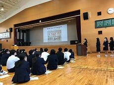 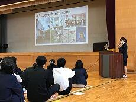

 開催予告 SAKURA Art & Learning 3days
開催予告 SAKURA Art & Learning 3days

第75回卒業証書授与式
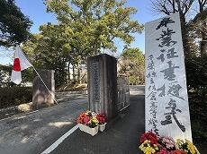
 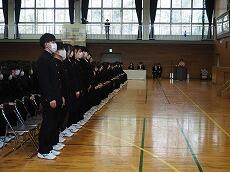
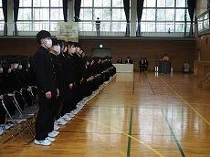 
 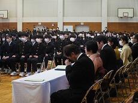
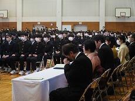SSH赤外線天文学講座
 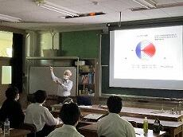
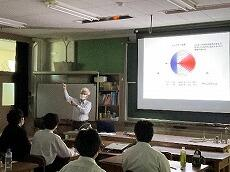 
課題研究発表会


 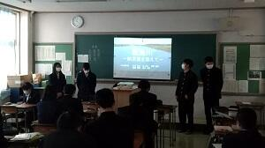
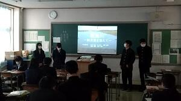 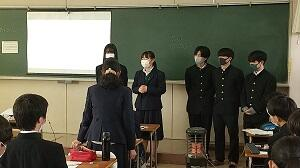
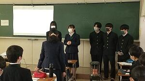


課題研究「学びの発表会」
R4佐倉高校課題研究テーマ一覧.pdf
 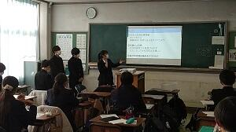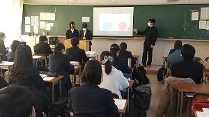
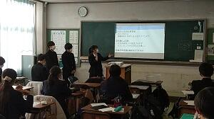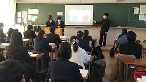


鹿山会後援シンガポール海外研修
１月２５日（水）～２８日（土） ３年ぶりにシンガポール研修を実施することができ、普通科、理数科の２年生１３名が参加しました。
<セントジョセフ・インスティテューション(SJI)訪問・交流>
SJIにとってもコロナ禍後最初の海外交流校の訪問だったそうです。SJI生案内による校内の見学、互いの学校や文化紹介、ゲームなどをしながらのice-breaker、課題研究発表会の後、昼食を頂いた際には春節の風習も体験させてもらうなど、楽しく充実した交流でした。SJIの皆さんがスーツケースを運んでくれたり、生徒会長さんが先生方と空港に見送りに来てくれたり等数々の気遣いには唯々感謝です。

 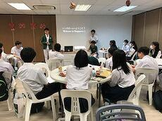
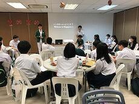 
 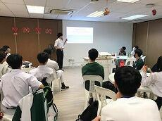
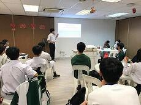 
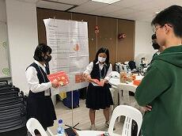  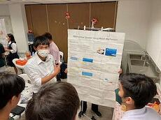
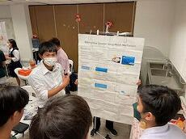
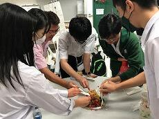 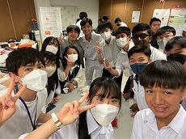 
＜クレア（自治体国際化協会）・シンガポール事務所訪問＞
クレアの活動やシンガポールの民族融和政策について説明をしていただき、佐倉校生の課題研究発表に対し感想・助言をいただきました。準備の甲斐あって、発表は言うまでも無く、英語でのQ&Aにも適切に対応できました。


「受験生応援コーナー」のお知らせ
第３回開かれた学校づくり委員会が行われました。
１月２７（金）１５時から、「第３回開かれた学校づくり委員会」が行われました。
地域住民、同窓会、最寄り駅、地域教育関係、保護者の各代表者を交えて、様々な視点から本校の教育活動に対する様々なご意見をいただく機会となりました。いただいた助言をもとに今後の改善につなげてまいります。
今回は、部活動の見学もしていただきました。


SSH有機化学実験講座
令和４年１２月２４日（土）、２５日（日）の２日間、東邦大学理学部においてＳＳＨ有機化学実験講座が開催され、２年生２名、１年生７名の計９名（普通科３名、理数科６名）が参加しました。
講座では、解熱鎮痛剤でありアスピリンの名で知られているアセチルサリチル酸の合成を行いました。その後、合成した化合物を精製し融点測定や塩化鉄(Ⅲ)水溶液との呈色反応を行い、赤外線吸収スペクトル分析法（ＩＲ）・核磁気共鳴スペクトル分析法（ＮＭＲ）・質量分析法（ＭＳ）の３種類の機器分析により、各自が合成した化合物の同定を行うという一連の化学的手法を体験しました。
また、コンピュータ上で原料であるサリチル酸と無水酢酸、合成物であるアセチルサリチル酸について分子モデリングを行い、機器分析の結果との比較も行いました。その結果、参加者全員がアスピリンを無事合成できたことが確認できました。

 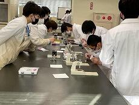
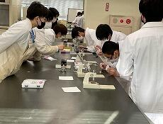 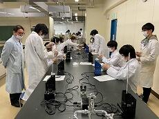
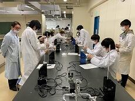 


12月14日(水)セントジョセフ・インスティテューションのタン先生来校
シンガポール海外研修で交流しているセントジョセフ・インスティテューション（SJI）の国際交流部長タン先生が来校されました。授業見学の後、来年１月にシンガポールを訪問する生徒の案内で部活動の様子も見学されました。
また、同校主催のオンライン国際交流行事 「CURA 2022」（10/22土～11/12土）に本校3年生1名参加し、文化交流やSDGｓに関するプレゼンテーション等を行いました。
（SJIの他に交流校フィリピン3校、香港3校、韓国２校、日本２校合計６６名参加）
 2022年度全国高校生フォーラム
2022年度全国高校生フォーラム

令和４年度後期防災避難訓練


 普通科課題研究「佐倉スイーツ」班の紹介
普通科課題研究「佐倉スイーツ」班の紹介


11月18日（金）海外理解促進のための講演会（第1学年）


令和４年度修学旅行 第4日
京菓子体験、組み紐体験、着付け体験など、クラスごとに楽しい1日を過ごしました。
帰りの新幹線では、ぐっすりと眠っている生徒もみられましたが、きっと夢の中でも良き思い出を作っているのでしょう。
東京駅で、全員が無事に解散できたことは何よりの成果です。
保護者の皆様も、修学旅行に向けて、ご協力ありがとうございました。


 令和４年度 修学旅行 第3日②
令和４年度 修学旅行 第3日②
お昼も、仲間と一緒に食べたことで、より一層美味しく感じたようです。
明日は、いよいよ最終日。かなり疲れていますが、夜も遅くまで楽しく過ごすのでしょうか。


 令和４年度 修学旅行 第3日
令和４年度 修学旅行 第3日
この班は、着付けを行い、これから出発です。素晴らしい出会いがあると良いですね。
せんせいっていいもんだ
講師は、採用3年目の中学校の先生で、本校の卒業生でもあります。
1年生16名が参加し、仕事の内容や先生になるための道のり、やりがい等についての話がありました。
スマホやタブレットを活用しての参加型の講座になり、本校の1年生も積極的に質問等を行いました。

令和４年度 修学旅行 第2日
奈良公園、東大寺、春日大社、伏見稲荷、宇治平等院、京都タワー‥。写真でしか見たことが無い場所に行き、日本の歴史と文化を肌で感じ取ったようです。全ての班が、無事に宿舎の御殿荘に到着しました。
また、夕食後には、夜の寺社を拝観し、昼間とは異なる幻想的な世界を味わいました。

 令和４年度 修学旅行 第１日
令和４年度 修学旅行 第１日


美術部･工芸部 総合文化祭作品展に出品
美術部からは油画や水彩画など絵画20点が展示されます。工芸部からは陶芸や籐など立体作品が17点展示されます。また、今年度の全国高等学校総合文化祭とうきょう大会に出品された『indigo☆night』も展示されます。どの作品も個性が光る素晴しい作品ばかりです。
会期は令和4年11月15日(火)～11月20日(日)9：00～16：30です。入場無料でどなたでもご覧頂ける作品展となっておりますので、ぜひご来場ください。


２学年普通科中間発表会


１学年普通科中間発表会


英語拠点校事業による公開授業の実施について
１０月２６日（水）、県教育委員会指定の英語拠点校の事業の一つとして、公開授業を実施しました。
公開授業を計画した時点では、コロナ第７波の最中であったことから、今年度は、印旛地区の小・中・高等学校を対象に参加を呼びかけ、当日は１０名の先生方の参加となりました。
本校教員による２時間の授業を参観後、千葉大学教授 西垣知佳子 様の講演「新課程における小中高の接続」、研究協議、指導助言の日程で進めました。
研究協議では、具体的な授業の進め方等について、校種を超えて活発な意見交換をすることができ、大変意義ある研究協議となりました。
この会の成果を各校に持ちかえって授業改善に役立てることが期待されます。

令和４年度 球技大会
【男子バレーボール】 ３年D組
【女子バレーボール】 ３年D組

浅草インバウンド観光インタビュー調査

スクール・ポリシー
スクール・ポリシーを掲載しました。
スクール・ポリシー
 オランダ・オンライン研修
オランダ・オンライン研修
例年１１月にヨーロッパの数カ国からの高校生約100名が集まって行われるYouth Conference at Dollard Collegeは、コロナ禍で２年間中止されていましたが今年再開。１年生５名ずつを派遣してきた本校は、残念ながら現地参加することはできませんでしたが、放課後にオンラインで参加しました。
１日目には参加者、参加校の紹介があり、本校参加者が夏休みに作成した紹介ビデオや他校（オランダ、スペイン、フィンランド、ポーランド、ドイツ）の紹介を、翌日からは、プロジェクト「近未来の社会の姿」に関する授業や最終日のプレゼンテーションの様子を視聴しました。また、参加生徒はドラード・カレッジの生徒とメール交換などを行なっています。


「気付く・探る・考える」講演会
それを実感してもらおうと、10月11日(火)、1学年全生徒対象に「気付く・探る・考える」講演会を開催しました。講師にお迎えしたのは、東京外国語大学・大学院総合国際学研究院の篠田英朗教授。演題は、世界の問いである「ロシア・ウクライナ戦争で考える国際社会の安全保障システム」。単純に善悪のレッテルを貼るのではなく、論理的に原因分析をする。分析の手順は、個人・国家・国際関係と、視点ごとに分割する。その過程で自分独自の問いを立て、その観点から分析を深め、更に更に考え続ける。正当な学問の手順を学ぶ機会となりました。


ブリティッシュヒルズ国内英語宿泊研修


“新作”佐倉スイーツ出来上がりました。
9/23(金)、産学官連携企画“MIRAI KOMINKA for School”の新作スイーツ・メディア向け発表会がイオンタウンユーカリが丘で開催されました。昨年度の第1回は佐倉市内の高校だけでしたが、今年は千葉市、船橋市の高校も加わり、さらにパワーアップした活動になっています。13品の新作スイーツのうち、佐倉高校の課題研究班が４品、佐倉東高校の調理国際科が5品コラボしています。新商品の一般発売は、10/1(土)の千葉ジェッツ開幕戦がスタートとなります。以下に示した協賛店において10月初旬から販売を開始する予定です。なおこの取り組みはSDGsの理念を第一目標に、商品開発を通して地域の活性化や課題解決を目指す取り組みで、収益はすべて地域貢献に充てられます。その使途も生徒たちの課題研究の問いになっています。
12/27(火)には幕張イオンにおいてSDGs成果発表会を開催します。
また今年度は佐倉市役所との連携企画として、新商品はすべてふるさと納税の返礼品になる予定です。
佐倉高校の協賛店様を紹介します。
オリベート 入母屋珈琲 カフェシュクル MOCO
佐倉東高校さんの協賛店様を紹介します。
貝殻亭 入母屋珈琲 ベルズハート オリベート ブーランジュリーセット

書道部 全国高等学校総合文化祭（東京）に出品
展覧会には行書作品の「臨 米芾 糧院帖」を出品し、講評会でも取り上げられました。他県の出品者と共に参加した交流会では、ミニ巻子に江戸文字で創作する体験を行い、充実した時間となりました。


前期防災訓練
本日は大掃除と授業の後、前期の防災訓練を行いました。今回は、地震による火災の発生を想定し、非常時の避難経路と行動の仕方を確認しました。
エンパワーメントプログラム


令和4年度学校説明会
次回の学校説明会は、10月29日(土)に実施予定です。